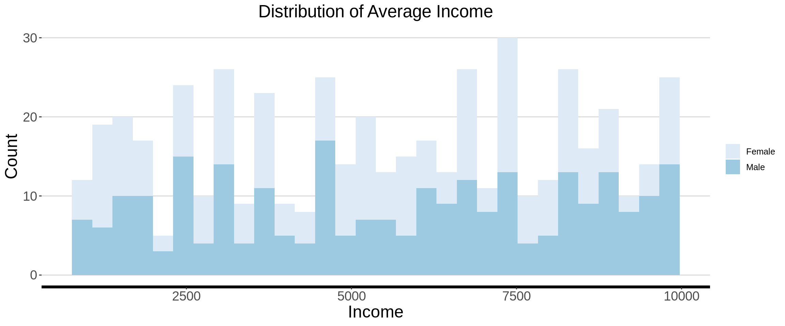

Data Manipulation
- Load the packages required
- Read in the wafanyikazi dataset
- 1. dplyr
- 2. tidyr
- 3. ggplot2
- 3.1 geom_bar of one variable
- 3.2 geom_bar of more than one variable
- 3.3 geom_line of one variable
- 3.4 geom_line of 2 variables
- 3.5 geom_boxplot of one variable
- 3.6 geom_boxplot of two variables
- 3.7 geom_area of one variable
- 3.8 geom_area of two variables
- 3.9 geom_histogram of one variable
- 3.10 geom_histogram of two variables
Tidyverse is a collection of R packages designed for data science. The packages that are included in tidyverse include:
readr: Used for reading in datasets into R.
dplyr: Used for data manipulation.
tidyr: Used for cleaning messy datasets.
ggplot2: Used for generating graphs.
forcats: Used for manipulating factor variables in R.
lubridate: Used for working with dates
tibble: Creates simple dataframes.
stringr: Used for manipulating strings.
purrr: USed for functional programming.
Load the packages required
#install.packages("tidyverse")
library(tidyverse)
library(rChambua)## Contains the dataset that we will use in this script (Wafanyikazi dataset)### 0.1 Install the libraries required
## Create a vector of packages to be installed
pkgs <- c("tidyverse","data.table","DT","lubridate","ggthemes","randomForest","readODS","ggcorrplot")
## Check if there are packages you want to load, that are not already installed.
miss_pkgs <- pkgs[!pkgs %in% installed.packages()[,1]]
## Installing the missing packages
if(length(miss_pkgs)>0){
install.packages(miss_pkgs)
}
## Loading all the packages
invisible(lapply(pkgs,library,character.only=TRUE))
## Remove the objects that are no longer required
rm(miss_pkgs)
rm(pkgs)Read in the wafanyikazi dataset
df <- wafanyikazi
#df <- read_csv("")1. dplyr
Contains several functions, which we will look at one by one.
1.1 select()
Used for picking and dropping variables.
## Picking variables.
df1 <- df %>%
select(Sid,Gender, Age)
## Dropping variables.
### When dopping variables, you insert a hyphen in front of the variable name.
df1 <- df %>%
select(-Sid, -Promotion)
## Picking or dropping variables acording to a given pattern.
df1 <- df %>%
select(contains("f")) ## Picking variables that contains letter e.
df1 <- df %>%
select(-ends_with("t"))
## Picking a sequence of variables that appear together.
df1 <- df %>%
select(Sid:Marital_Status)
rm(df1)1.2 filter()
Used for picking values.
filter works with mathematical operators.
== equality
!= non-equality
< less than
greater than
& and
- or
In english grammar, filter means removing unwanted material. But in R, we mostly use filter to keep observations, depending on the mathematical operators used.
## Dropping obsevations based on the condition of a numeric variable.
### Let us drop all those who are aged 25 and above
df2 <- df %>%
filter(Age < 25) ## notice the number is not enclosed in quotes
### Let us keep all those who are older than 25, but younger than 40
df2 <- df %>%
filter(Age >= 25 & Age <40) ## notice the number is not enclosed in quotes
df2 <- df %>%
filter(Age > 30 & Gender == "Female")
## Dropping obsevations based on the condition of a character/factor variable.
### Let us drop all males
df2 <- df %>%
filter(Gender == "Female")
df2 <- df %>%
filter(Gender != "Male")
rm(df2)1.3 mutate()
Used for generating variables
## Generating a basic variable.
df3 <- df %>%
mutate(prop_leavedays = Leave_Days/365)
## Generating a variable, based on the conditions of another variable.
df3 <- df %>%
mutate(Jinsia = if_else(Gender == "Female","Mke","Mme"))
rm(df3)There are other variations of mutate(). mutate_all(): Used for implementing the same function on all of the variables.
mutate_at(): Used for implementing a function, for specific varibles. mutate_if(): Used for implementing a function, on specific variables, if they meet a certain condition.
1.3.1: mutate_all()
The syntax is written as mutate_all(~(function(.))). In the function, where a variable name should be inserted, replace that with a “period”, to signify all the variables.
df4 <- df %>%
mutate_all(~paste0(., "_x"))
df4 <- df %>%
mutate_all(tolower)
rm(df4)1.3.2: mutate_at()
The syntax is written as mutate_at(vars(), funs(.))
df4 <- df %>%
mutate_at(vars(Gender, County), tolower)
df4 <- df %>%
mutate_at(vars(Gender, County), funs(paste(.,"x")))
rm(df4)1.3.3: mutate_if()
The syntax is written as mutate_if(condition, funs(.))
df4 <- df %>%
mutate_if(is.numeric, funs(.*100))
df4 <- df %>%
mutate_if(is.character, as.factor)
rm(df4)1.4 group_by() and summarise()
Used for generating summary statistics.
1.4.1 summarise()
tab <- df %>%
group_by(Gender) %>%
count() %>%
rename(Count = n)
tab <- df %>%
group_by(Gender) %>%
summarise(Count = n())
tab <- df %>%
group_by(Department) %>%
summarise(Avg_Income = mean(Income, na.rm = T))
1.4.2 summarise_at
tab <- df %>%
group_by(County) %>%
summarise_at(vars(Age, Leave_Days, Income), funs(mean(.,na.rm = TRUE)))
1.4.3 summarise_if
tab <- df %>%
group_by(County,Gender) %>%
summarise_if(is.numeric, funs(mean(.,na.rm = TRUE)))1.5 arrange
Used for ordering the data based on certain variables
df6 <- df %>%
arrange(Gender, Age)
df6 <- df %>%
arrange(Gender, desc(Age))2. tidyr
## Generatin a dummy dataset
Year <- c(2010,2011,2012,2013,2014)
Q1 <-c(1003,1532,954,841,823)
Q2 <-c(1359,933,992,1434,1034)
Q3 <-c(1326,904,845,1480,1184)
Q4 <-c(1122,1479,889,1174,1317)
sales = data.frame(Year,Q1 ,Q2, Q3, Q4)2.1 Wide to long
## Method 1: Using gather()
sales1 <- sales %>%
gather("Quarters","Sales_Values", -Year, na.rm = TRUE)
## Method 2: Using pivot_longer()
sales2 <- sales %>%
pivot_longer(-Year, names_to = "Quarters", values_to = "Sales_Values",values_drop_na = TRUE)2.2 Long to wide
## Method 1: Using spread()
sales3 <- sales1 %>%
spread(Quarters, Sales_Values)
## Method 2: Using pivot_wider()
sales4 <- sales2 %>%
pivot_wider(names_from = "Quarters", values_from = "Sales_Values")3. ggplot2
Used for creating beautiful graphs
## Let us create a theme that we will use in this training
training_theme <- theme_hc()+
theme(legend.position = "right",
legend.direction = "vertical",
legend.title = element_blank(),
plot.title = element_text( size = rel(1.6), hjust = 0.5),
plot.subtitle = element_text(size = rel(1.5), hjust = 0.5),
axis.text.x = element_text(size =rel(1.5),angle = 0),
axis.text.y = element_text(size =rel(1.5),angle = 0),
axis.title = element_text( size = rel(1.55)),
axis.line.x = element_line(size = 1.5, colour = "black"),
panel.background = element_rect(fill = NA))
rstudio_blue <- "#4AA4DE"3.1 geom_bar of one variable
## Let us generate a graph that sows us the number of individuals per department.
## First come up with the table showing frequencies and percentages.
tab <- df %>%
group_by(Department) %>%
count() %>%
rename(Count = n) %>%
ungroup() %>%
mutate(Percentage = round(Count/ sum(Count) *100,1))
## Generate the graph
bargraph1 <- ggplot(data = tab, aes(x = Department, y = Percentage))+
geom_bar(stat = "identity", fill = rstudio_blue)+
geom_text(aes(label = Percentage), vjust = -0.25, hjust = 0.5, size=4)+
training_theme+
labs(title = "Distribution of Respondents per Department", x="Department",
y="Percentage")
bargraph1 3.2 geom_bar of more than one variable
## Let us generate a graph that sows us the number of individuals per department and gender category.
## First come up with the table showing frequencies and percentages.
tab <- df %>%
group_by(Department, Gender) %>%
count() %>%
rename(Count = n) %>%
ungroup() %>%
group_by(Department) %>%
mutate(Percentage = round(Count/ sum(Count) *100,1))
## Generate the graph
bargraph2 <- ggplot(data = tab, aes(x = Department, y = Percentage, fill=Gender))+
geom_bar(stat = "identity", position = "dodge")+
geom_text(aes(label = Percentage), vjust = -0.25, hjust = 0.5, size=4,position = position_dodge(width = 0.9))+
training_theme+
scale_fill_brewer(palette = "Blues")+
labs(title = "Distribution of Respondents per Department", x="Department",
y="Percentage")
bargraph2 
3.3 geom_line of one variable
## Let us generate a graph that sows us the average income per department.
## First come up with the table showing frequencies and percentages.
tab <- df %>%
group_by(Department) %>%
summarise(avg_income = round(mean(Income, na.rm = T), 2))
## Generate the graph
linegraph1 <- ggplot(data = tab, aes(x = Department, y = avg_income, group = 1))+
geom_line(stat = "identity", color = rstudio_blue)+
geom_text(aes(label = avg_income), vjust = -0.25, hjust = 0.5, size=4)+
training_theme+
labs(title = "Distribution of Average Income per Department", x="Department",
y="Average Income")
linegraph1 3.4 geom_line of 2 variables
## Let us generate a graph that sows us the average income per department and gender.
## First come up with the table showing frequencies and percentages.
tab <- df %>%
group_by(Department, Gender) %>%
summarise(avg_income = round(mean(Income, na.rm = T), 2))
## Generate the graph
linegraph2 <- ggplot(data = tab, aes(x = Department, y = avg_income, group = Gender, color = Gender))+
geom_line(stat = "identity", size = 2)+
training_theme+
scale_color_manual(values = c("Yellow", "Red"))+
labs(title = "Distribution of Average Income per Department", x="Department",
y="Average Income")
linegraph2 3.5 geom_boxplot of one variable
## Let us generate a graph that sows us the average income per department.
## Generate the graph
boxplot1 <- ggplot(data = df, aes(x = Department, y = Income))+
geom_boxplot( fill = rstudio_blue)+
training_theme+
labs(title = "Distribution of Average Income per Department", x="Department",
y="Average Income")
boxplot1 3.6 geom_boxplot of two variables
## Let us generate a graph that sows us the average income per department and gender.
## Generate the graph
boxplot2 <- ggplot(data = df, aes(x = Department, y = Income, fill = Gender))+
geom_boxplot()+
training_theme+
scale_fill_brewer(palette = "Blues")+
labs(title = "Distribution of Average Income per Department", x="Department",
y="Average Income")
boxplot2 3.7 geom_area of one variable
## Let us generate a graph that sows us the average income per department and gender.
## Generate the graph
area1 <- ggplot(data = df, aes(x = Income))+
geom_area(stat = "bin", fill = rstudio_blue)+
training_theme+
labs(title = "Distribution of Average Income", x="Income",
y="Count")
area1 3.8 geom_area of two variables
## Let us generate a graph that sows us the average income per department and gender.
## Generate the graph
area2 <- ggplot(data = df, aes(x = Income, fill = Gender))+
geom_area(stat = "bin")+
training_theme+
scale_fill_brewer(palette = "Blues")+
labs(title = "Distribution of Average Income", x="Income",
y="Count")
area2 3.9 geom_histogram of one variable
## Let us generate a graph that sows us the average income per department and gender.
## Generate the graph
hist1 <- ggplot(data = df, aes(x = Income))+
geom_histogram(stat = "bin", fill = rstudio_blue)+
training_theme+
labs(title = "Distribution of Average Income", x="Income",
y="Count")
hist1 3.10 geom_histogram of two variables
## Let us generate a graph that sows us the average income per department and gender.
## Generate the graph
hist2 <- ggplot(data = df, aes(x = Income, fill = Gender))+
geom_histogram(stat = "bin")+
training_theme+
scale_fill_brewer(palette = "Blues")+
labs(title = "Distribution of Average Income", x="Income",
y="Count")
hist2 